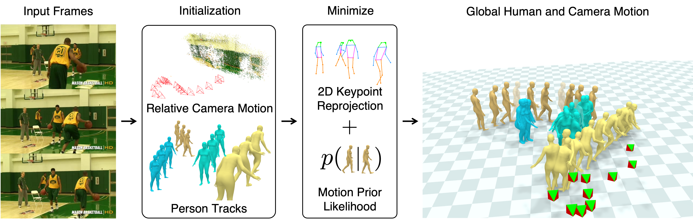

Given a video of moving people (left), we present SLAHMR: Simultaneous Localication and Human Mesh Recovery, a method to recover the global trajectories of the people and cameras in the world coordinate frame (right top). Prior methods model human motion in the camera coordinate frame (right bottom), and cannot recover the global displacement of the athlete.
We propose a method to reconstruct global human trajectories from videos in the wild. Our optimization method decouples the camera and human motion, which allows us to place people in the same world coordinate frame. Most existing methods do not model the camera motion; methods that rely on the background pixels to infer 3D human motion usually require a full scene reconstruction, which is often not possible for in-the-wild videos. However, even when existing SLAM systems cannot recover accurate scene reconstructions, the background pixel motion still provides enough signal to constrain the camera motion. We show that relative camera estimates along with data-driven human motion priors can resolve the scene scale ambiguity and recover global human trajectories. Our method robustly recovers the global 3D trajectories of people in challenging in-the-wild videos, such as PoseTrack. We quantify our improvement over existing methods on 3D human dataset Egobody. We further demonstrate that our recovered camera scale allows us to reason about motion of multiple people in a shared coordinate frame, which improves performance of downstream tracking in PoseTrack.
We demonstrate our method on videos from the validation split of the Posetrack dataset.
We also demonstrate on a variety of other people videos, such as those from the DAVIS dataset.
Given an input in-the-wild video with a moving camera (left), we first predict the relative camera motion with DROID-SLAM (middle top). We also recover the unique identities of people across the video and their local 3D poses with PHALP (middle bottom). These are used to initialize the proposed joint optimization problem, which is performed over multiple stages, and solves for the trajectories of the moving people in the world coordinate frame, as well as the scale and ground of the world.
We demonstrate our method compared with GLAMR, which predicts the world trajectories of people from their local poses, and PHALP, a single-view tracking method. Note that the baselines don't estimate the floor plane. For visualization of the baselines, we used the floor plane estimated by our method, and aligned the baseline trajectory with ours using the first pose of the first detected person.